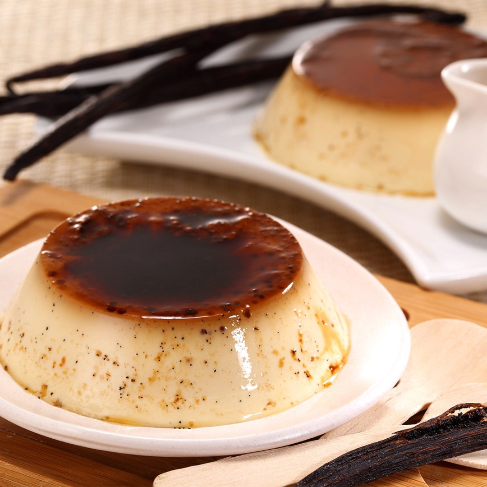
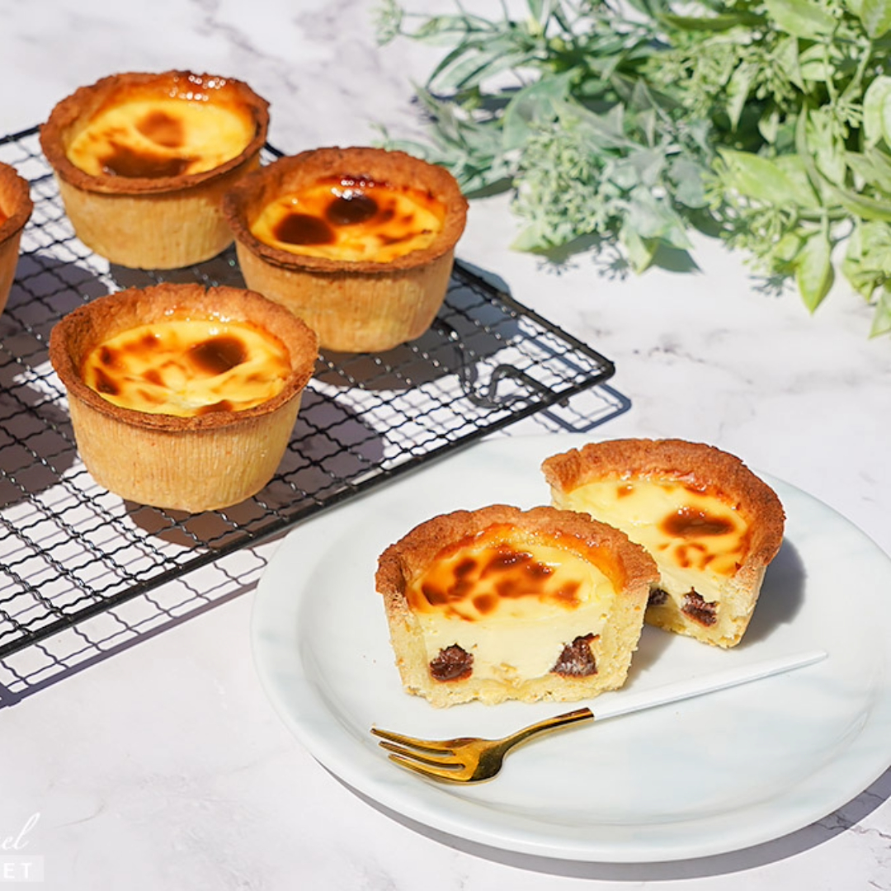
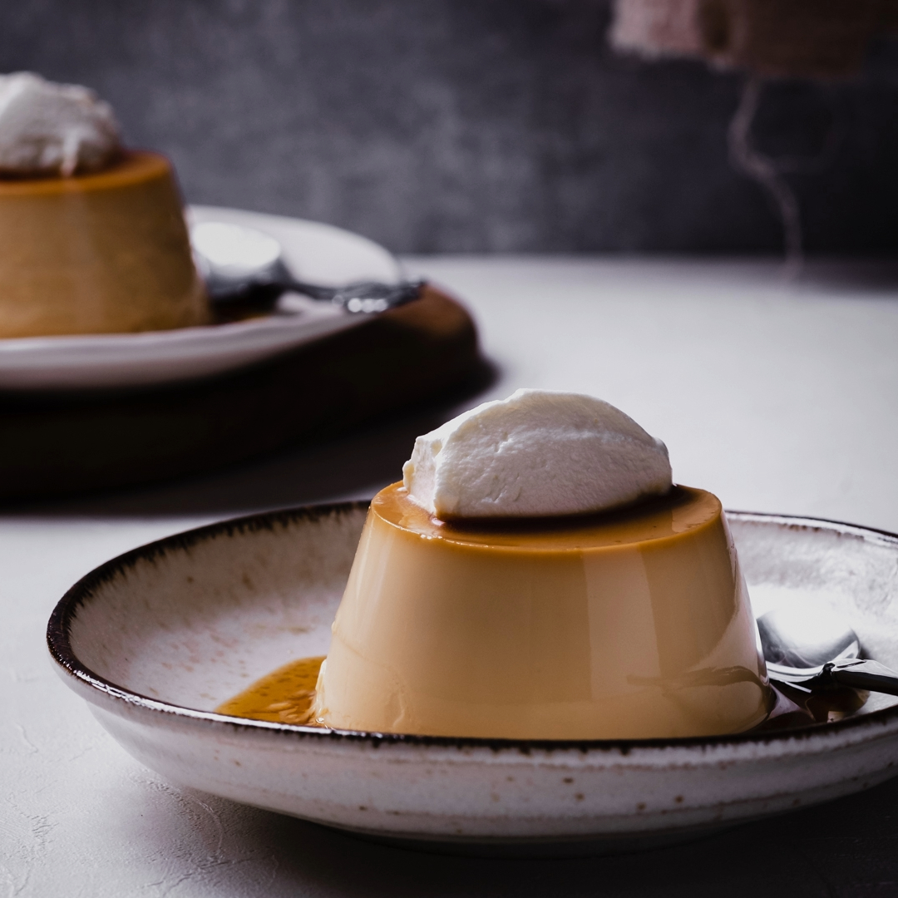
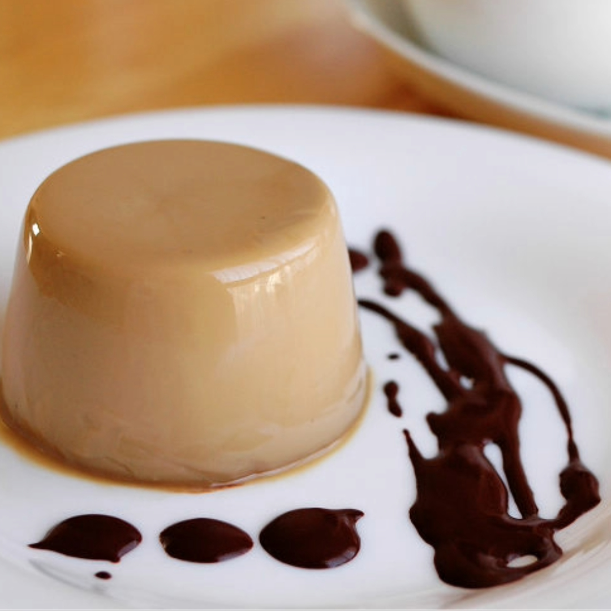

布丁大集合
布丁種類

法式布丁
以蛋、牛奶和糖為基礎，通常還包括香草，以焦糖裝飾在底部，倒入混合液體，最後在烤箱中蒸煮而成。通常帶有濃厚的奶香味，質地滑順，焦糖為其帶來深厚的甜味。

德式布丁
通常由麵粉、牛奶、蛋和糖混合製成。有時會添加水果或堅果。比法式布丁更厚實，質地較為緊密。它的風味可以因添加的水果或堅果而變得豐富。

日式布丁
以牛奶、糖和蛋為基礎，呈現出濃郁的奶香味。通常在製作時使用特殊的布丁模具。通常比較滑嫩，味道不過甜，以細緻的質感和淡雅的口味為特點。

義式布丁
以奶油、糖、牛奶和明膠或吉利丁製成。它通常不需要在烤箱中烹煮，而是在冰箱中冷卻凝固。質地柔軟，口感滑溜，味道濃郁，常伴隨著水果醬或巧克力醬。